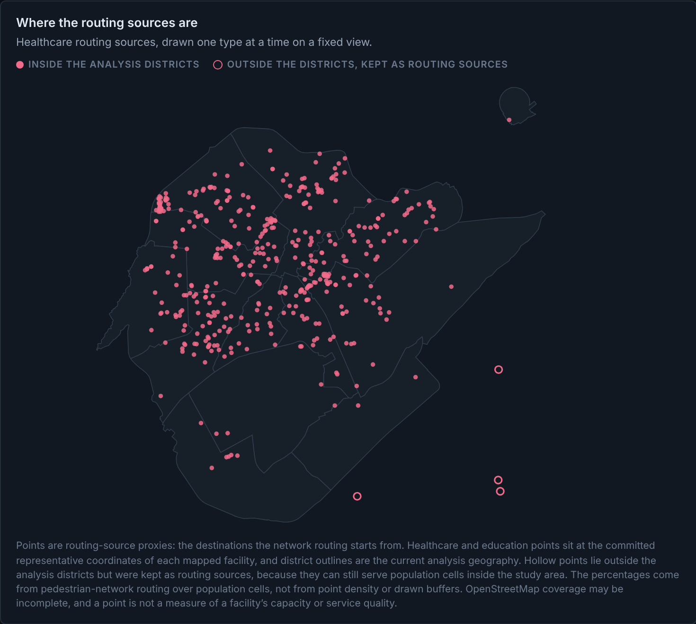
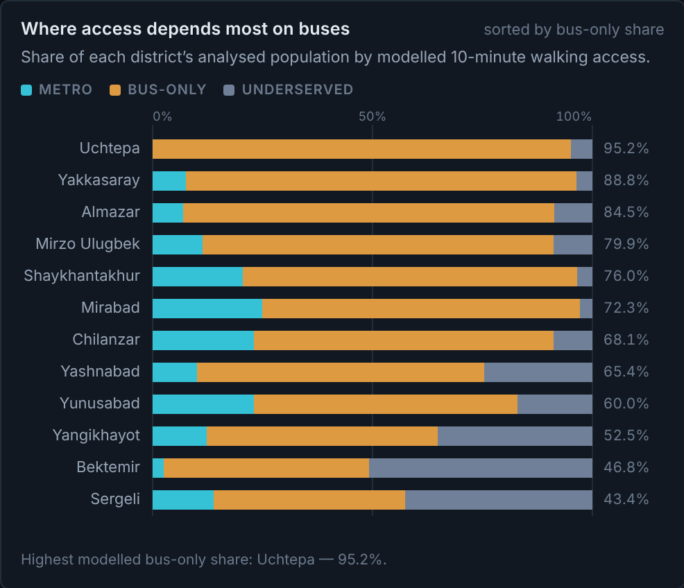
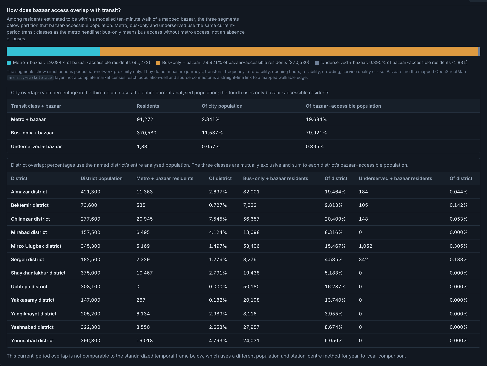
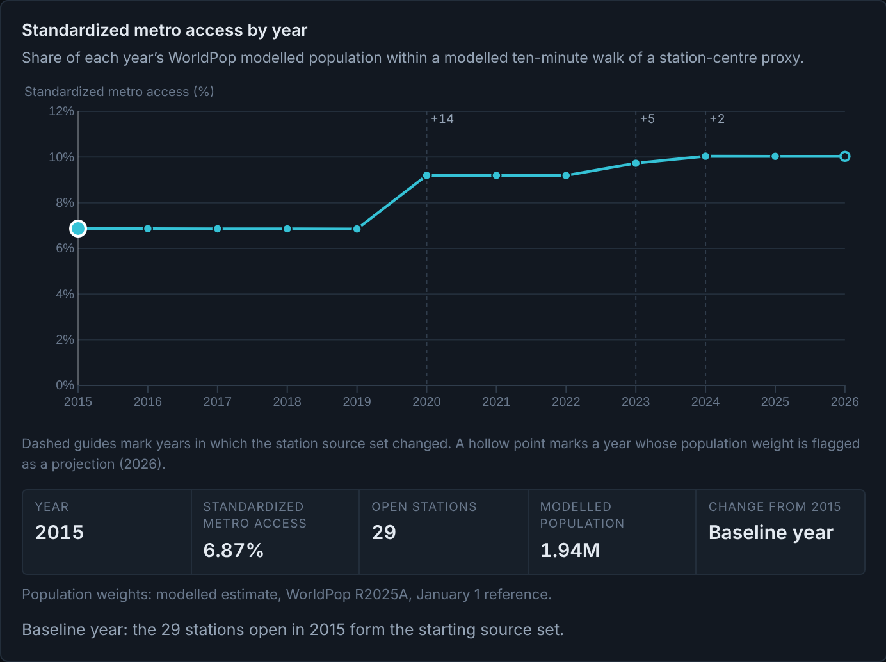

A metro line on a map does not mean residents can reach it on foot. Rail corridors, canals and walled blocks make two points the same crow-flies distance a very different walk apart.
How much of Tashkent's analysed population is within a modelled ten-minute walk of metro access, and where does the bus network fill the gap?
Five questions: (1) citywide metro share; (2) district variation; (3) bus-only dependence; (4) density vs access; (5) bazaar–transit overlap.




Same 800 m model: 46.9% reach mapped healthcare, 72.5% education, 14.4% a bazaar. The committed healthcare-and-education intersection is 43.7% (residents reaching both, not a sum).
On this model, metro walking access in Tashkent is narrow and concentrated along the lines — about one analysed resident in seven. The large majority can walk to a bus stop but not the metro, and that dependence is very unevenly spread across districts. Everything is reproducible from audited outputs, with the uncertainty on the page rather than buried.